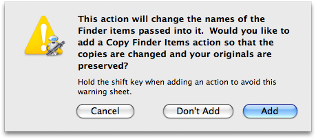
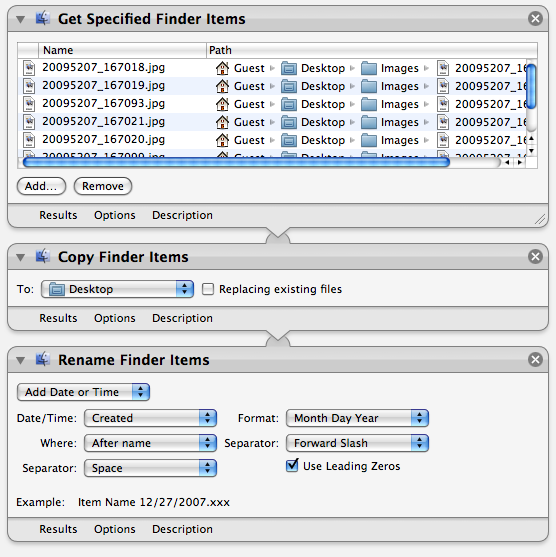

Tutorial 02: Add an Action to the Workflow
The next step in creating the workflow is to add the chosen action to the workflow. With the action selected in the Action List, hit the Return key to add the action to the end of the workflow.
A sheet will drop down into the Automator window displaying the following message:

Some Automator actions, such as renaming or image processing actions, alter items in ways that are not reversible. For safety, the addition of these actions to a workflow triggers a warning dialog informing the user of the potential of permenent data change and sometimes offering additional choices to preserve their orginal data.
Click the Add button in the alert dialog and the Rename Finder Items action is added to the workflow, preceded by the Copy Finder Items action that will create duplicates of the original items and pass references to the duplicate files to the renaming action to process:

(For an alternative method of adding actions to a workflow, see TIP #3 in the sidebar)